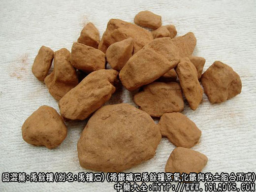

禹余粮为少常用中药，始载《神农本草经》，列为上品。
别名：禹余粮。
来源：为褐铁矿石禹余粮系氧化铁与粘土组合而成。多生成于池泽底部及山谷溪流聚集处。
产地：主产于河南、江苏、山西、四川等地。
性状鉴别：呈不规则的块状，大小不一，有时碎裂成层片状。表面不光洁，鲜黄色至黄色，断裂面淡褐色，棕褐色或深褐色相交错，呈不规则的层纹，有时含有天然牛黄样结核，或夹有粘土层。褐色部分坚硬，黄色部分松软，碎裂时产生黄色细粉末，极易附着在他物上，有土腥气，味淡。
以块状整齐，外表黄色，质坚重而稍松脆，中含泥土层少者为佳。
主要成分：含三氧化二铁。
药理作用：与赤石脂相似、止泻、止血。
炮制：生用或煅用。
性味：甘、涩、微寒。
归经：入胃、大肠经。
功能：涩肠止泻，止血。
主治：久泻久痢，便血脱肛，崩漏带下等症。
临床应用：适应症与赤石脂同，治慢性痢疾，腹泻和子宫功能性出血，常与赤石脂同用，方如赤石脂禹余粮汤。
用量：9～15g。
处方举例：赤石脂禹余粮汤（《伤寒论》）：赤石脂15g、禹余粮15g，水煎分3次温服。又可按以上比例制丸服。